Distribución de decibeles
Histograma — Frecuencia de niveles de ruido
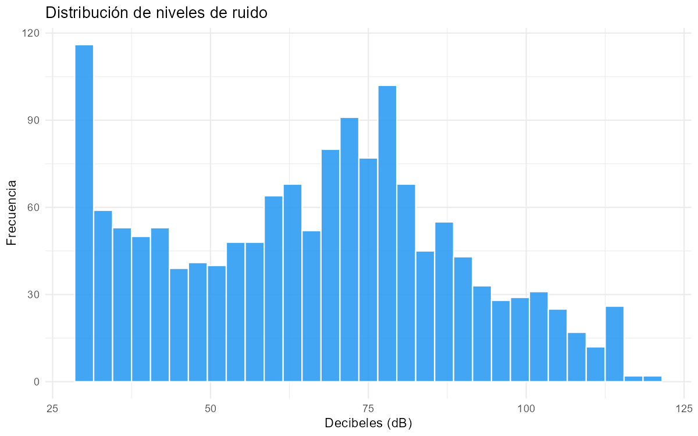
Curva de densidad
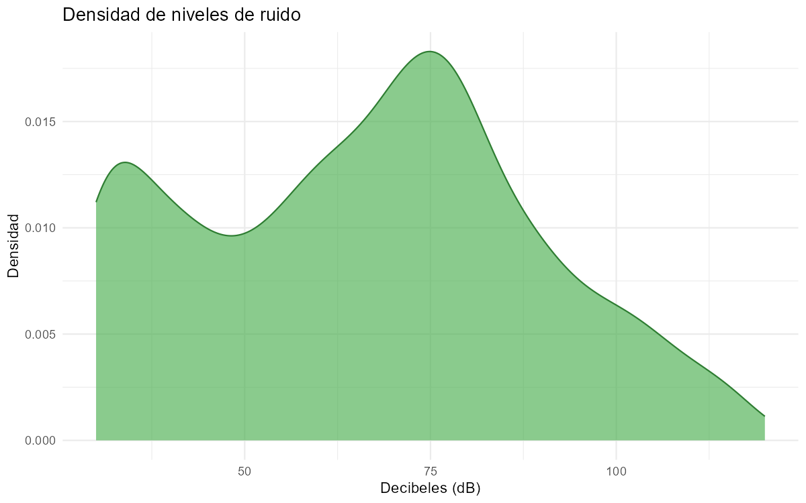
Análisis por zona
Ruido promedio por zona
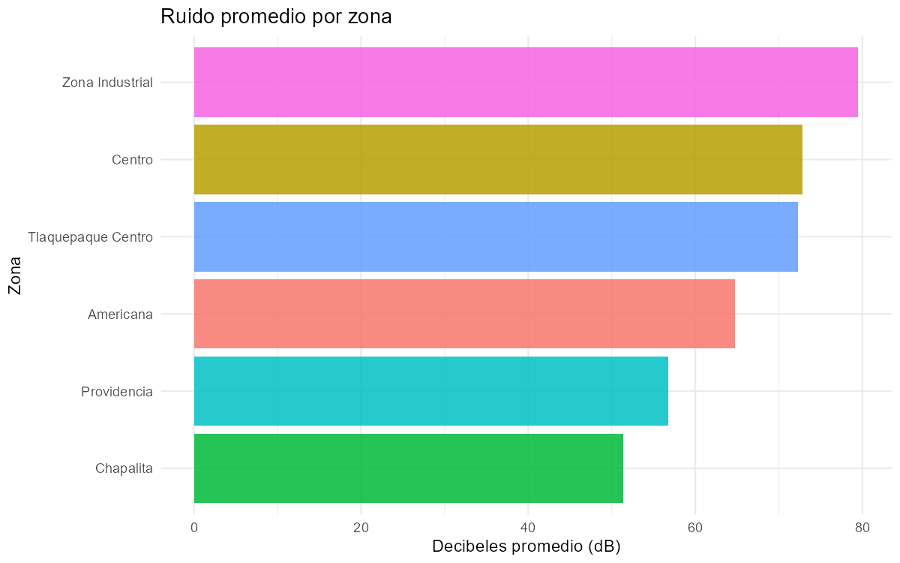
Boxplot — Distribución por tipo de zona
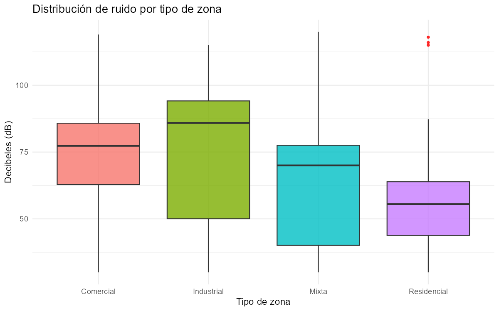
Violin plot — Distribución por tipo de zona
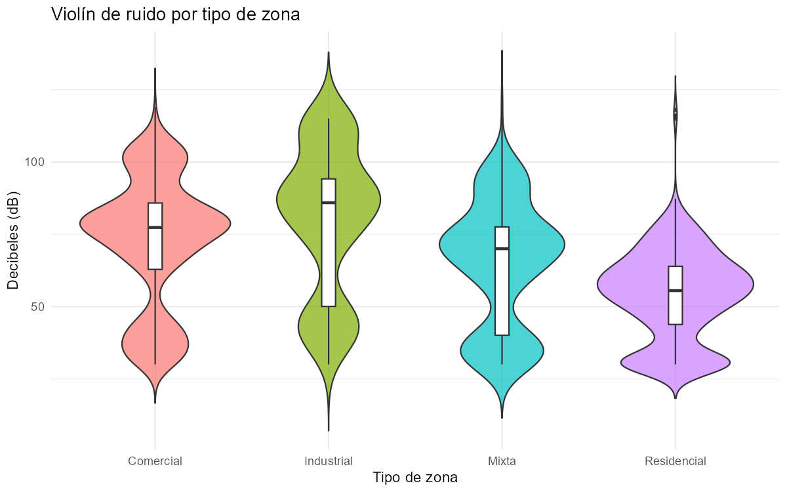
Relación tráfico vs decibeles
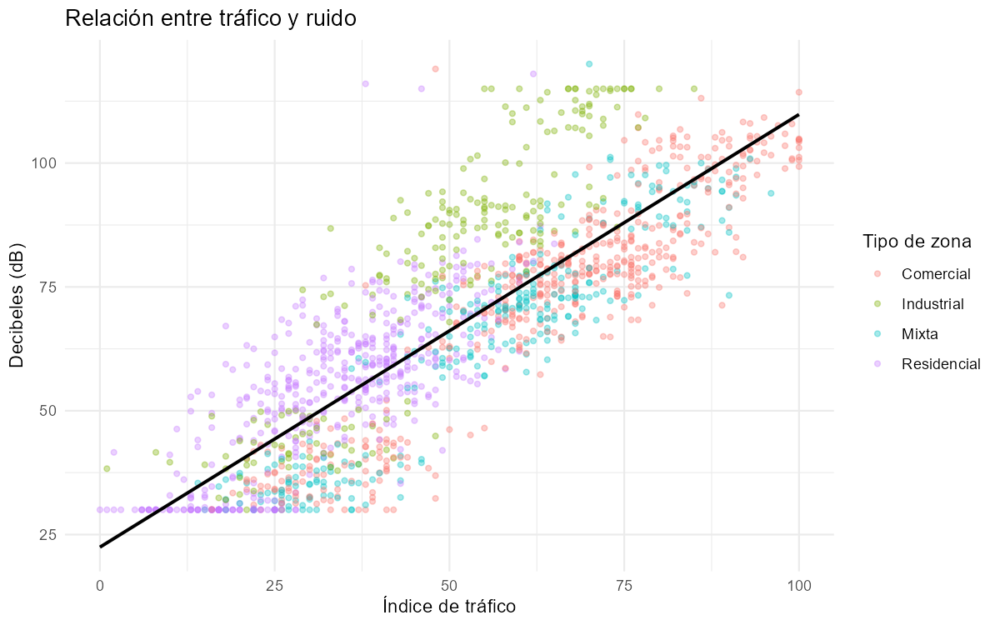
Heatmap — Ruido promedio por día de semana y hora
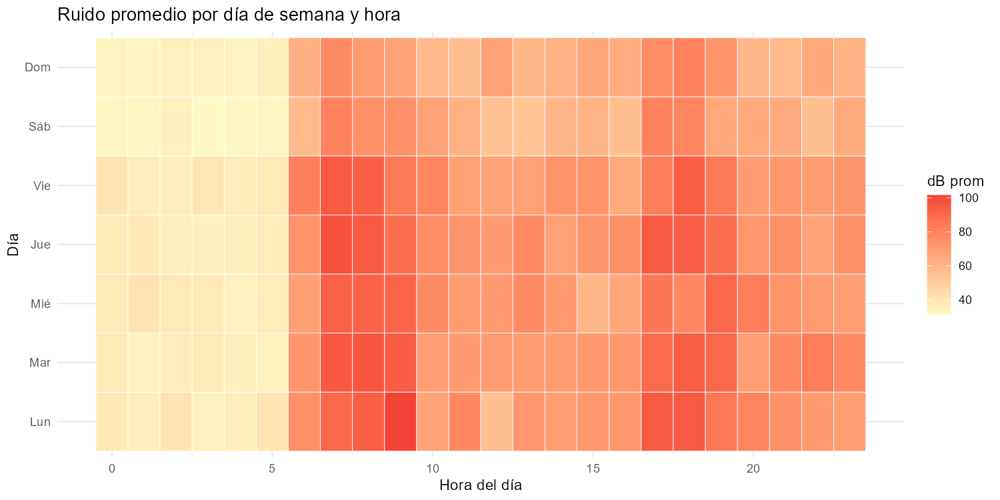
Serie temporal
Ruido promedio diario (Feb–Jul 2025)
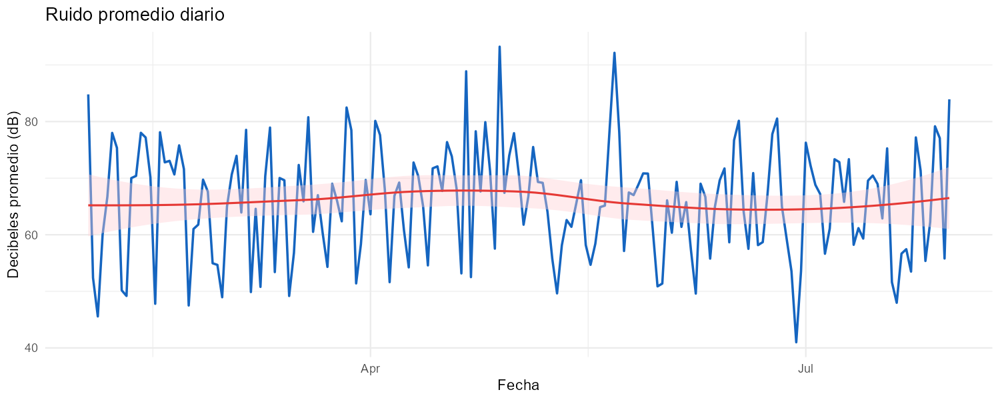
Autocorrelación (ACF)
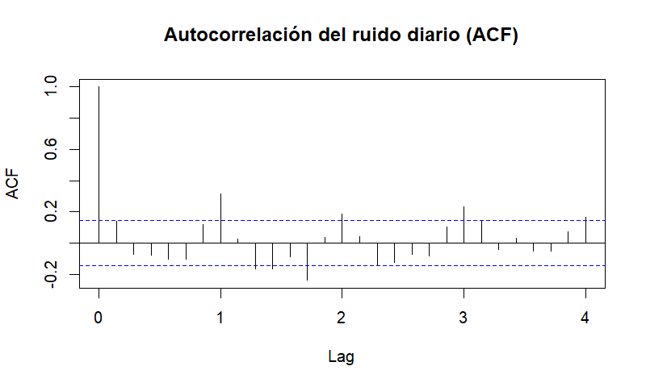
Descomposición STL — Tendencia + Estacionalidad + Residuo
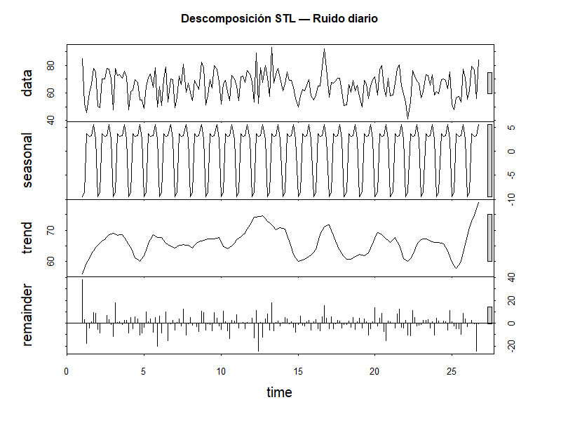
Predicción ARIMA — Próximos 7 días
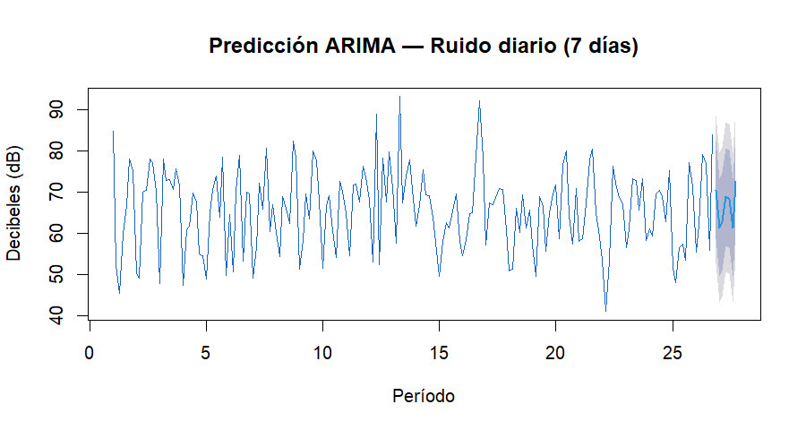
Análisis de componentes principales (PCA)
Scree plot — Varianza explicada por componente
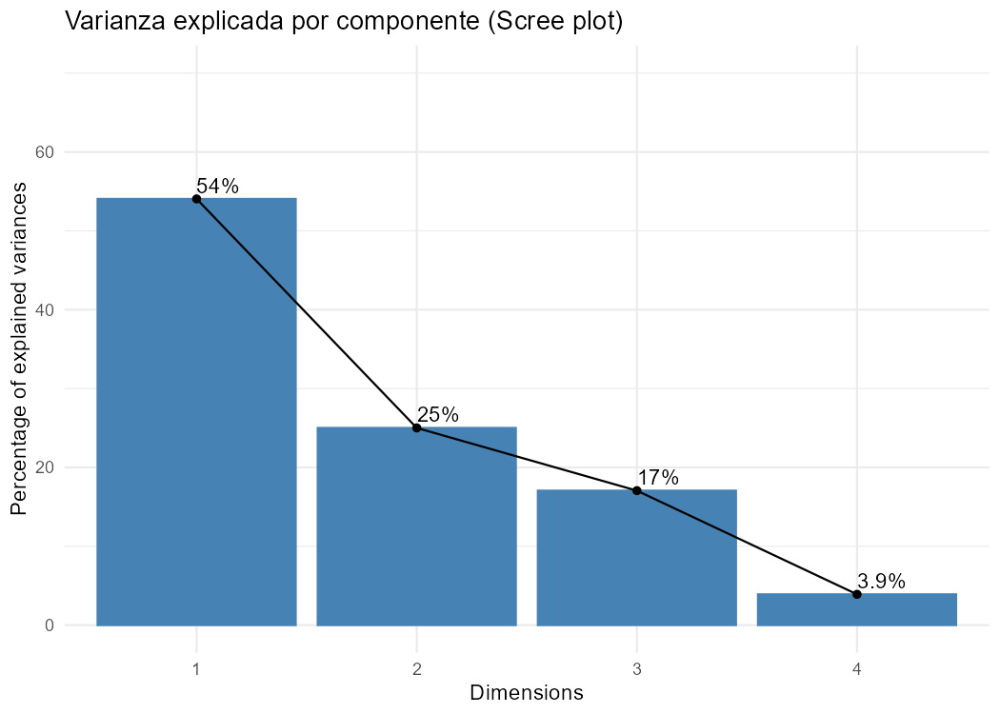
PC1 vs PC2 por tipo de zona
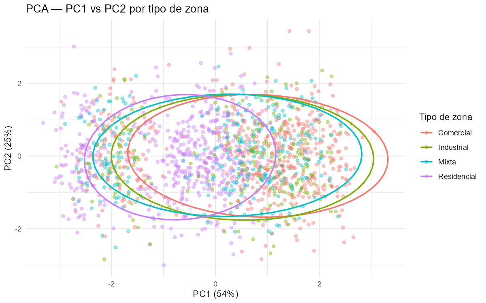
Análisis de texto (dato no estructurado)
10 palabras más frecuentes en los comentarios de sensores
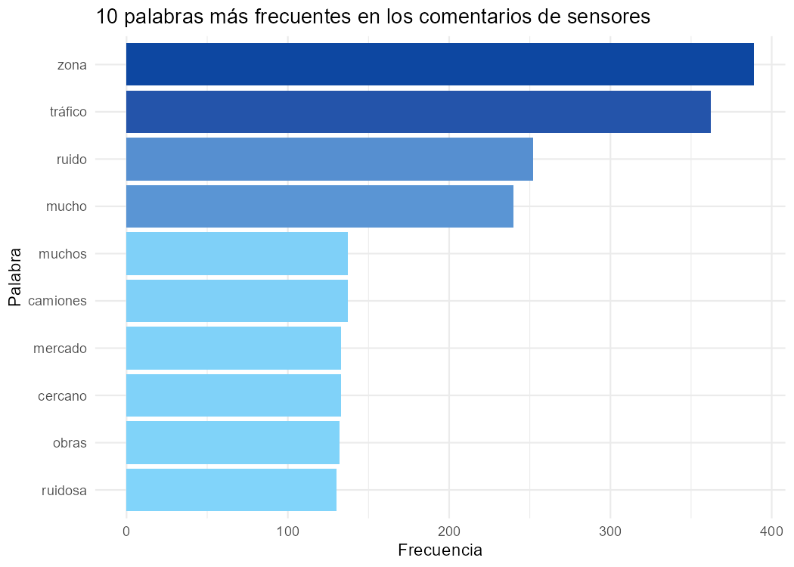
Mapa interactivo de ruido por zona
Nivel de ruido promedio por zona — haz clic en cada punto para ver detalles